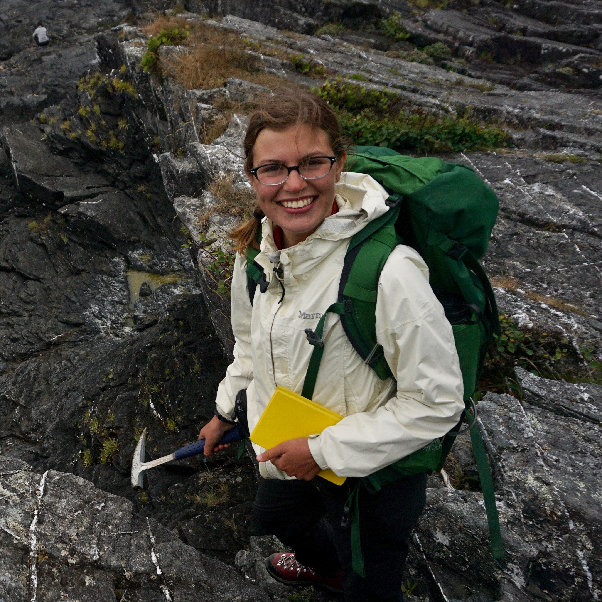

|  |
I am a postdoc in rock deformation interested in the deformation mechanisms operating along plate boundaries. My research investigates the rheology of fault and shear zones using a combination of field, experimental, and microanalytical methods to determine how deformation at the grain scale influences the strength of the lithosphere and controls large-scale tectonics. seyle005 [at] umn.edu Department of Earth & Environmental Sciences University of Minnesota Minneapolis, MN |